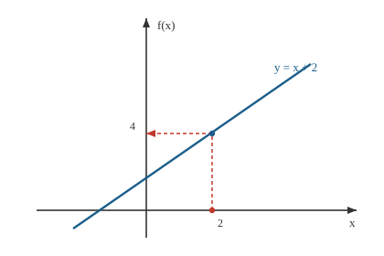
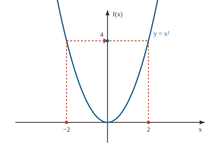
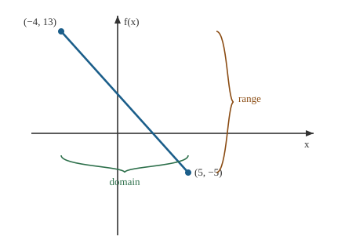

<script>if(location.hostname.endsWith('onrender.com'))location.replace('https://math-sandbox.pages.dev'+location.pathname+location.search+location.hash)</script>
<section class="theory" data-section="P1-2.1">
<h2>2.1 Definition of a function</h2>
<p class="src">Based on Cambridge International AS &amp; A Level Mathematics: Pure Mathematics 1 Coursebook (Sue Pemberton), Chapter 2 Functions, printed pp.34–38 (definition, one-one and many-one mappings, domain and range, Worked examples 2.1–2.2 style, Exercise 2A). Printed pages were read from P1.pdf (printed 34–38 = PDF 46–50). Own wording and new numbers.</p>
<p class="key-words"><strong>Key words:</strong> <em>one-one function</em>, <em>many-one function</em>, <em>domain of the function</em>, <em>range of the function</em></p>
<p>A function is a relation that uniquely associates members of one set with members of another set. An alternative name is a mapping. For each allowed input there is exactly one output. We write \(f:x\mapsto x+2\) for \(x\in\mathbb{R}\), or \(f(x)=x+2\) for \(x\in\mathbb{R}\), and read this as “the function \(f\) maps \(x\) to \(x+2\)”.</p>
<p>A <strong>one-one function</strong> has one output for each input, and each output that appears comes from only one input. The function \(x\mapsto x+2\), for \(x\in\mathbb{R}\), is one-one: the input 2, for example, gives the unique output 4.</p>
<figure>

<figcaption>The mapping \(x\mapsto x+2\) is a one-one function.</figcaption>
</figure>
<p>A <strong>many-one function</strong> still has one output for each input, but an output may come from more than one input. The function \(x\mapsto x^2\), for \(x\in\mathbb{R}\), is many-one, because both \(2\) and \(-2\) are mapped to \(4\).</p>
<figure>

<figcaption>The mapping \(x\mapsto x^2\) is a many-one function.</figcaption>
</figure>
<p>The graph of \(y^2=x\) fails the test for a function, because a single input can produce two outputs.</p>
<p>The set of allowed input values is the <strong>domain of the function</strong>. The set of output values that actually occur is the <strong>range of the function</strong> (the coursebook also uses the word codomain for this set of outputs). When a function is defined, its domain must be stated. On a sketch, the domain can be read from the \(x\)-values that are used, and the range from the \(y\)-values that appear.</p>
<div class="worked-example">
<h4>Worked example 1</h4>
<p class="src">Book: Worked example 2.1 style, printed p.36. New numbers.</p>
<p>The function \(f\) is given by \(f(x)=7-3x\) for \(x\in\mathbb{R}\), \(0\leqslant x\leqslant 4\).</p>
<ol class="steps">
<li>The domain of the function is \(0\leqslant x\leqslant 4\). <span class="mark">B1</span></li>
<li>The graph is a straight line of gradient \(-3\). At \(x=0\), \(f(0)=7\); at \(x=4\), \(f(4)=7-12=-5\). Because the gradient is negative, these are the ends of the range of the function: \(-5\leqslant f(x)\leqslant 7\). <span class="mark">A1</span></li>
</ol>
<p class="final"><strong>Answer:</strong> Domain \(0\leqslant x\leqslant 4\); range \(-5\leqslant f(x)\leqslant 7\)</p>
</div>
<figure>

<figcaption>For \(f(x)=5-2x\) on \(-4\leqslant x\leqslant 5\), the domain is the interval of \(x\)-values used and the range is \(-5\leqslant f(x)\leqslant 13\).</figcaption>
</figure>
<div class="worked-example">
<h4>Worked example 2</h4>
<p class="src">Book: Worked example 2.2 style, printed pp.36–37. New numbers.</p>
<p>The function \(f\) is defined by \(f(x)=(x+1)^2-4\) for \(-3\leqslant x\leqslant 2\). Find the range of the function.</p>
<ol class="steps">
<li>The expression \((x+1)^2-4\) has a minimum value \(-4\) when \(x=-1\), and this input lies inside the given domain. <span class="mark">M1</span></li>
<li>The endpoints are \(f(-3)=0\) and \(f(2)=5\). The outputs therefore run from the minimum \(-4\) up to the larger endpoint \(5\), so the range of the function is \(-4\leqslant f(x)\leqslant 5\). <span class="mark">A1</span></li>
</ol>
<p class="final"><strong>Answer:</strong> \(-4\leqslant f(x)\leqslant 5\)</p>
</div>
<h3>Common mistakes</h3>
<ul>
<li>Calling a relation a function when one input has two outputs (for example \(y^2=x\)).</li>
<li>Stating a formula without its domain, or taking the range to be all real numbers when the domain is restricted.</li>
<li>Reading the range from the endpoints alone when a turning point inside the interval gives a smaller or larger value.</li>
</ul>
<h3>Quick checks</h3>
<div class="quick-check" data-q="QC1">
<h4>Quick check 1</h4>
<p>The function \(f\) is given by \(f(x)=5-2x\) for \(-4\leqslant x\leqslant 5\). What is the maximum value of \(f\)?</p>
<details><summary>Worked solution</summary>
<ol class="steps">
<li>The gradient is negative, so the maximum is at the left endpoint: \(f(-4)=5-2(-4)=13\). <span class="mark">A1</span></li>
</ol>
<p class="final"><strong>Answer:</strong> \(13\)</p>
</details>
</div>
<div class="quick-check" data-q="QC2">
<h4>Quick check 2</h4>
<p>If \(f(x)=x+2\), what is the value of \(f(5)\)?</p>
<details><summary>Worked solution</summary>
<ol class="steps">
<li>\(f(5)=5+2=7\). <span class="mark">A1</span></li>
</ol>
<p class="final"><strong>Answer:</strong> \(7\)</p>
</details>
</div>
<div class="quick-check" data-q="QC3">
<h4>Quick check 3</h4>
<p>The function \(f\) is defined by \(f(x)=(x-3)^2+8\) for \(-1\leqslant x\leqslant 9\). What is the minimum value of \(f\)?</p>
<details><summary>Worked solution</summary>
<ol class="steps">
<li>The squared bracket is zero when \(x=3\), which lies inside the domain, so the minimum value is \(8\). <span class="mark">A1</span></li>
</ol>
<p class="final"><strong>Answer:</strong> \(8\)</p>
</details>
</div>
<p class="marks-key"><strong>Marks:</strong> M = method, A = accurate answer (depends on M), B = independent mark. Leave exact values exact.</p>
</section>
